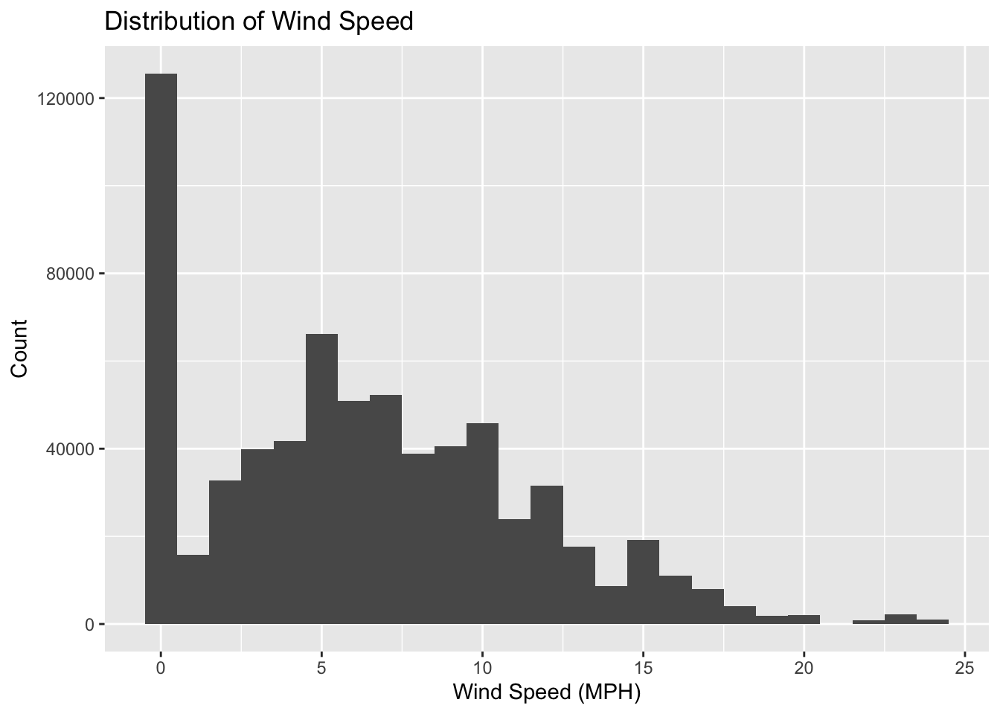

Our first step in this project is to clean the data in order to make it usable for our analysis. Lets load in the data and take a look at the structure.
Based on the data dictionary provided to us by the NFL, we already have a basic understanding of the data, but lets look at a few more important pieces of information, such as the total number of games:
length(unique(df$GameId))
[1] 688
We can see that there are a total of 688 games.
Our next step is to start cleaning columns with missing values:
# Replace empty strings and "N/A" strings with NA for the entire dataframedf <-lapply(df, function(x) ifelse(x ==""| x =="N/A", NA, x))# Convert the list back to a dataframedf <-as.data.frame(df)# Ensure that strings are not converted to factorsdf <-data.frame(lapply(df, function(x) if (is.factor(x)) as.character(x) else x), stringsAsFactors =FALSE)# Now you can count the missing values againmissing_values_count <-sapply(df, function(x) sum(is.na(x)))# Print the count of missing values for each columnprint(missing_values_count)
GameId PlayId Team
0 0 0
X Y S
0 0 0
A Dis Orientation
0 0 23
Dir NflId DisplayName
28 0 0
JerseyNumber Season YardLine
0 0 0
Quarter GameClock PossessionTeam
0 0 0
Down Distance FieldPosition
0 0 8602
HomeScoreBeforePlay VisitorScoreBeforePlay NflIdRusher
0 0 0
OffenseFormation OffensePersonnel DefendersInTheBox
88 0 22
DefensePersonnel PlayDirection TimeHandoff
0 0 0
TimeSnap Yards PlayerHeight
0 0 0
PlayerWeight PlayerBirthDate PlayerCollegeName
0 0 0
Position HomeTeamAbbr VisitorTeamAbbr
0 0 0
Week Stadium Location
0 0 0
StadiumType Turf GameWeather
41690 0 60170
Temperature Humidity WindSpeed
63646 6160 91872
WindDirection
104676
As we can see, most of the columns do not have missing values, but the ones that do, have a lot. Lets start with WindSpeed:
value_counts <-table(df$WindSpeed)# Print the value countsprint(value_counts)
We can standardize this column and replace the missing values with the mean of the column:
clean_windspeed <-function(x) { x <-as.character(x)# Check if x is a digitif (grepl("^\\d+$", x)) {return(as.numeric(x)) }# Check if x is purely alphabeticif (grepl("^[A-Za-z]+$", x)) {return(0) }# Check if x is alphanumericif (grepl("^[A-Za-z0-9]+$", x)) {return(as.numeric(unlist(strsplit(toupper(x), "M"))[1])) }# Check if x contains a dash (range)if (grepl("-", x)) { range <-as.numeric(unlist(strsplit(x, "-")))return(mean(range)) }# Default casereturn(0)}# Apply the custom function to clean 'WindSpeed' valuesdf$WindSpeed <-sapply(df$WindSpeed, clean_windspeed)# Replace NA values with the mean of the 'WindSpeed' columndf$WindSpeed <-ifelse(is.na(df$WindSpeed), mean(df$WindSpeed, na.rm =TRUE), df$WindSpeed)
Lets plot the cleaned columns:
library(ggplot2)# Plot the distribution of 'WindSpeed' valuesggplot(df, aes(x = WindSpeed)) +geom_histogram(binwidth =1) +labs(x ="Wind Speed (MPH)", y ="Count", title ="Distribution of Wind Speed")

Next we clean WindDirection in a similar way:
value_counts <-table(df$WindDirection)# Print the value countsprint(value_counts)
1 13 8 Calm
1122 836 2860 1056
E East EAST East North East
20438 12078 902 748
East Southeast ENE ESE From ESE
1078 14542 11858 682
From NE From NNE From NNW From S
924 968 924 4840
From SSE From SSW From SW from W
880 968 5764 726
From W From WSW N N-NE
1980 946 30800 1012
NE NNE NNW North
39314 27434 21208 20086
North East North/Northwest Northeast NorthEast
3014 968 3652 3212
Northwest NW s S
4070 34408 2728 27478
S-SW SE South South Southeast
1276 31746 24574 946
South Southwest South west South, Southeast Southeast
858 836 1254 1936
Southerly Southwest SouthWest SSE
1166 3894 2134 15400
SSW SW W W-NW
27764 39886 30338 1804
W-SW West West Northwest West-Southwest
968 17468 1056 1386
WNW WSW
29348 34936
Because the data is currently time-series data, we can forward fill the humidity and temperature column:
library(zoo)
Attaching package: 'zoo'
The following objects are masked from 'package:base':
as.Date, as.Date.numeric
# Fill NA values using forward-fill for 'Humidity'df$Humidity <-na.locf(df$Humidity, na.rm =FALSE)# Fill NA values using forward-fill for 'Temperature'df$Temperature <-na.locf(df$Temperature, na.rm =FALSE)
We can also impute the missing values for Orientation, Dir, DefendersInTheBox, and OffenseFormation. Because there are not a lot of missing values, we can use the mean of the column to fill in the missing values. We can also fill in the missing values for FieldPosition:
library(dplyr)
Attaching package: 'dplyr'
The following objects are masked from 'package:stats':
filter, lag
The following objects are masked from 'package:base':
intersect, setdiff, setequal, union
# Calculating the meansorientation_mean <-mean(df$Orientation, na.rm =TRUE)dir_mean <-mean(df$Dir, na.rm =TRUE)defenders_mean <-ceiling(mean(df$DefendersInTheBox, na.rm =TRUE))# Using mutate to fill NA valuesdf <- df %>%mutate(Orientation =ifelse(is.na(Orientation), orientation_mean, Orientation),Dir =ifelse(is.na(Dir), dir_mean, Dir),DefendersInTheBox =ifelse(is.na(DefendersInTheBox), defenders_mean, DefendersInTheBox),OffenseFormation =ifelse(is.na(OffenseFormation), 'UNKNOWN', OffenseFormation) )df$FieldPosition <-ifelse(df$YardLine ==50, df$PossessionTeam, df$FieldPosition)
Next, the GameWeather column is a bit messy, and has multiple different values, even though there are only 4 weather types that really matter rain, overcast, clear, snow, and if players are climate controlled (indoors etc). Lets clean this column:
value_counts <-table(df$GameWeather)# Print the value countsprint(value_counts)
30% Chance of Rain
1144
Breezy
1034
Clear
55726
Clear and cold
1276
Clear and Cool
1034
Clear and sunny
1078
Clear and Sunny
990
Clear and warm
1144
Clear skies
3366
Clear Skies
1980
cloudy
1870
Cloudy
147114
Cloudy and cold
1100
Cloudy and Cool
1232
Cloudy with periods of rain, thunder possible. Winds shifting to WNW, 10-20 mph.
946
Cloudy with showers and wind
990
Cloudy, 50% change of rain
1034
Cloudy, chance of rain
902
Cloudy, fog started developing in 2nd quarter
1100
Cloudy, light snow accumulating 1-3"
836
Cloudy, Rain
1100
Cold
2178
Controlled Climate
15708
Coudy
990
Fair
9966
Hazy
3124
Heavy lake effect snow
1870
Indoor
6182
Indoors
5676
Light rain
792
Light Rain
3762
Mostly clear
1166
Mostly Clear
2024
Mostly cloudy
6864
Mostly Cloudy
27962
Mostly Coudy
1144
Mostly sunny
6930
Mostly Sunny
10736
Mostly Sunny Skies
1100
N/A (Indoors)
16302
N/A Indoor
4224
N/A Indoors
968
overcast
924
Overcast
2156
Partly clear
770
partly cloudy
1122
Partly cloudy
1980
Partly Cloudy
55880
Partly cloudy and mild
902
Partly Clouidy
1100
Partly sunny
3058
Partly Sunny
7590
Party Cloudy
814
Rain
26180
Rain and Wind
1100
Rain Chance 40%
836
Rain likely, temps in low 40s.
1078
Rain shower
1188
Raining
990
Rainy
704
Scattered Showers
1100
Showers
880
Snow
2002
Sun & clouds
968
sUNNY
1012
Sunny
143088
Sunny and clear
946
Sunny and cold
990
Sunny and warm
2134
Sunny Skies
1012
Sunny, highs to upper 80s
1100
Sunny, Windy
792
T: 51; H: 55; W: NW 10 mph
924
group_game_weather <-function(weather) { rain <-c('Rainy', 'Rain Chance 40%', 'Showers','Cloudy with periods of rain, thunder possible. Winds shifting to WNW, 10-20 mph.','Scattered Showers', 'Cloudy, Rain', 'Rain shower', 'Light Rain', 'Rain') overcast <-c('Cloudy, light snow accumulating 1-3"', 'Party Cloudy', 'Cloudy, chance of rain','Coudy', 'Cloudy, 50% change of rain', 'Rain likely, temps in low 40s.','Cloudy and cold', 'Cloudy, fog started developing in 2nd quarter','Partly Clouidy', '30% Chance of Rain', 'Mostly Coudy', 'Cloudy and Cool','cloudy', 'Partly cloudy', 'Overcast', 'Hazy', 'Mostly cloudy', 'Mostly Cloudy','Partly Cloudy', 'Cloudy') clear <-c('Partly clear', 'Sunny and clear', 'Sun & clouds', 'Clear and Sunny','Sunny and cold', 'Sunny Skies', 'Clear and Cool', 'Clear and sunny','Sunny, highs to upper 80s', 'Mostly Sunny Skies', 'Cold','Clear and warm', 'Sunny and warm', 'Clear and cold', 'Mostly sunny','T: 51; H: 55; W: NW 10 mph', 'Clear Skies', 'Clear skies', 'Partly sunny','Fair', 'Partly Sunny', 'Mostly Sunny', 'Clear', 'Sunny') snow <-c('Heavy lake effect snow', 'Snow') none <-c('N/A Indoor', 'Indoors', 'Indoor', 'N/A (Indoors)', 'Controlled Climate')if (weather %in% rain) {return('rain') } elseif (weather %in% overcast) {return('overcast') } elseif (weather %in% clear) {return('clear') } elseif (weather %in% snow) {return('snow') } elseif (weather %in% none) {return('none') } else {return('none') }}df$GameWeather <-sapply(df$GameWeather, group_game_weather)
We can do a similar cleaning process with the stadium type column:
Continuing now, we can encode all categorical variables:
# Now you can count the missing values againmissing_values_count <-sapply(df, function(x) sum(is.na(x)))# Print the count of missing values for each columnprint(missing_values_count)
GameId PlayId Team
0 0 0
X Y S
0 0 0
A Dis Orientation
0 0 0
Dir NflId DisplayName
0 0 0
JerseyNumber Season YardLine
0 0 0
Quarter PossessionTeam Down
0 0 0
Distance FieldPosition HomeScoreBeforePlay
0 0 0
VisitorScoreBeforePlay NflIdRusher OffenseFormation
0 0 0
OffensePersonnel DefendersInTheBox PlayDirection
0 0 0
Yards PlayerHeight PlayerWeight
0 0 0
PlayerCollegeName Position HomeTeamAbbr
0 0 0
VisitorTeamAbbr Week Stadium
0 0 0
Location StadiumType Turf
0 0 0
GameWeather Temperature Humidity
0 0 0
WindSpeed WindDirection TimeDelta
0 0 0
BirthYear GameHour DL
0 0 0
LB BL OL
0 0 0
Now for some data preprocessing. The data is currently time series data that includes a row for each player during each individual play of every snap in every game. We want to change each row to be its own play in order to not only understand the data better but also to create independent rows. Here we go through the steps to achieve this:
library(dplyr)# ... (rest of your code initializing 'one', 'two', and 'more')new_cols <-c("PlayId")for (col in more) { new_cols <-c(new_cols, paste0(col, 'A', 0:10), paste0(col, 'B', 0:10))}max_rows <-nrow(df) /22# Initialize the train DataFrame with an additional column for PlayIdtrain <-data.frame(matrix(NA, ncol =length(new_cols), nrow = max_rows))names(train) <- new_cols# Populate the train DataFramefor (col in more) {for (i in0:21) { index <-seq(i +1, nrow(df), by =22) col_name_A <-paste0(col, 'A', i %%11) col_name_B <-paste0(col, 'B', i %%11)# Assign values to train DataFrameif (length(index) >0) { train[1:length(index), col_name_A] <- df[index, col, drop =FALSE]if (length(index) >1) { train[1:(length(index) -1), col_name_B] <- df[index[-1], col, drop =FALSE] } } }}# Assign PlayId values to the train DataFrame# The length of the repeated PlayIds should match the number of rows in 'train'play_ids <- df$PlayId[seq(1, nrow(df), by =22)]# The number of times each PlayId should be repeated# This should match the number of rows in 'train' that correspond to each playrepeat_count <-nrow(train) /length(play_ids)train$PlayId <-rep(play_ids, each = repeat_count)# Check if the number of rows matchif (nrow(train) !=length(train$PlayId)) {stop("Mismatch in the number of rows between 'train' and 'PlayId'.")}
# Now you can count the missing values againmissing_values_count <-sapply(df, function(x) sum(is.na(x)))# Print the count of missing values for each columnprint(missing_values_count)
GameId PlayId Team
0 0 0
X Y S
0 0 0
A Dis Orientation
0 0 0
Dir NflId DisplayName
0 0 0
JerseyNumber Season YardLine
0 0 0
Quarter PossessionTeam Down
0 0 0
Distance FieldPosition HomeScoreBeforePlay
0 0 0
VisitorScoreBeforePlay NflIdRusher OffenseFormation
0 0 0
OffensePersonnel DefendersInTheBox PlayDirection
0 0 0
Yards PlayerHeight PlayerWeight
0 0 0
PlayerCollegeName Position HomeTeamAbbr
0 0 0
VisitorTeamAbbr Week Stadium
0 0 0
Location StadiumType Turf
0 0 0
GameWeather Temperature Humidity
0 0 0
WindSpeed WindDirection TimeDelta
0 0 0
BirthYear GameHour DL
0 0 0
LB BL OL
0 0 0
# Define the list 'one' with the correct column names that exist in your dataframeone <-c('Season', 'YardLine', 'Quarter', 'PossessionTeam', 'Down', 'Distance','FieldPosition', 'HomeScoreBeforePlay', 'VisitorScoreBeforePlay', 'OffenseFormation','OffensePersonnel', 'DefendersInTheBox', 'PlayDirection', 'Yards', 'HomeTeamAbbr','VisitorTeamAbbr', 'Week', 'Stadium', 'Location', 'StadiumType', 'Turf','GameWeather', 'Temperature', 'Humidity', 'WindSpeed', 'WindDirection','TimeDelta', 'GameHour', 'DL', 'LB', 'BL', 'OL')# Check if all columns in 'one' exist in 'df'all(one %in%names(df))
[1] TRUE
# If the above check returns TRUE, proceed to group and summariseif (all(one %in%names(df))) { df_one <- df %>%group_by(PlayId) %>%summarise(across(all_of(one), ~first(na.omit(.x))))print(df_one)} else {stop("One or more columns in 'one' do not exist in the dataframe.")}